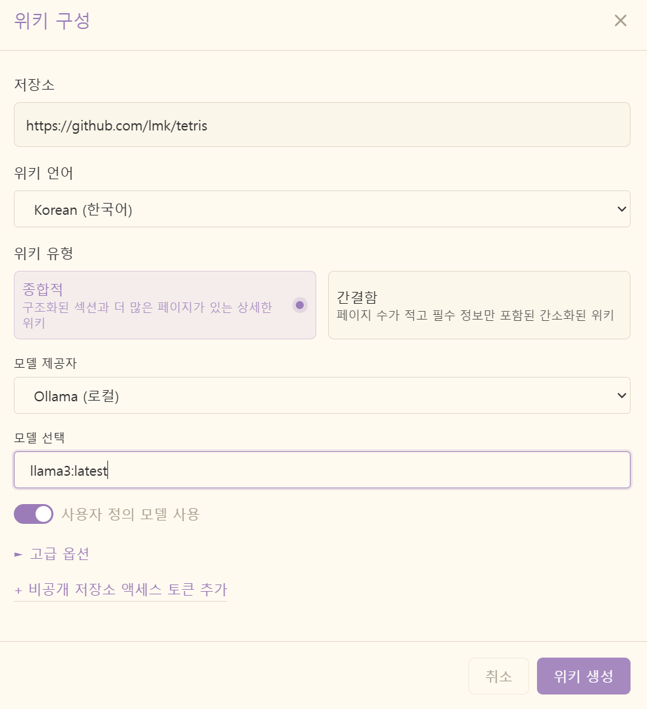
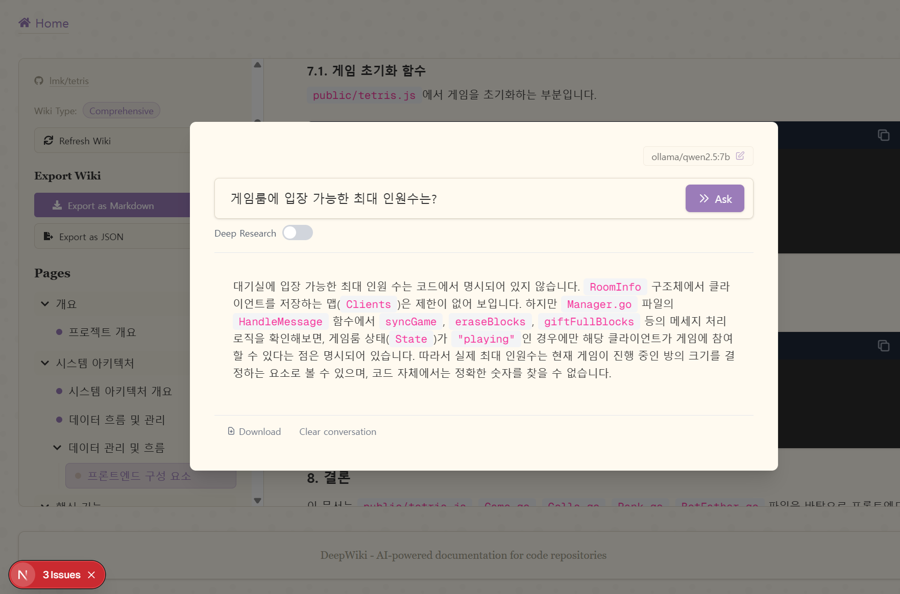

코드로 문서 작성 자동화
AI 활용 삽질기
25.12.03.
한솔인티큐브 이명규
개발자가 가장 싫어하는 것은?
변수명/함수명 짓기 (네이밍)
엉망진창인 코드 유지보수
문서 작성!!

Deepwiki-open
DeepWiki는 GitHub, GitLab 또는 BitBucket 저장소를 위한 아름답고 상호작용 가능한 위키를 자동으로 생성합니다! 저장소 이름만 입력하면 DeepWiki가 다음과 같은 작업을 수행합니다
- 코드 구조 분석
- 포괄적인 문서 생성
- 모든 기능의 작동 방식을 설명하는 시각적 다이어그램 생성
- 모든 내용을 탐색하기 쉬운 위키로 구성
지원하는 모델 제공자
- Google API
- OpenAI API
- OpenRouter API
- Azure OpenAI API
- Ollama: Private Model Provider
deepwiki-open 설치
$ git clone https://github.com/AsyncFuncAI/deepwiki-open.git
$ python3.9 -m poetry install
deepwiki-open 실행
$ python3.9 -m poetry run python -m api.main
$ npm run dev
Ollama 설치
$ curl -fsSL https://ollama.com/install.sh | sh
>>> Installing ollama to /usr/local
>>> Downloading Linux amd64 bundle
######################################################################## 100.0%
>>> Creating ollama user...
>>> Adding ollama user to render group...
>>> Adding ollama user to video group...
>>> Adding current user to ollama group...
>>> Creating ollama systemd service...
>>> Enabling and starting ollama service...
Created symlink /etc/systemd/system/default.target.wants/ollama.service -> /etc/systemd/system/ollama.service.
>>> The Ollama API is now available at 127.0.0.1:11434.
>>> Install complete. Run "ollama" from the command line.
WARNING: No NVIDIA/AMD GPU detected. Ollama will run in CPU-only mode.
$ ps -ef | grep ollama
322:ollama 555097 1 0 08:41 ? 00:00:00 /usr/local/bin/ollama serve
326:sms 555141 554854 0 08:50 pts/0 00:00:00 grep --color=auto -n ollama
Ollama 외부 접근 설정
$ sudo systemctl edit ollama.service
[Service]
Environment="OLLAMA_HOST=0.0.0.0"
$ sudo systemctl daemon-reload
$ sudo systemctl restart ollama
Provider만 설치한것으로, 두뇌(모델)은 별도설치
Ollama 모델 설치
$ ollama pull nomic-embed-text
$ ollama pull llama3
$ ollama pull qwen2.5:7b
$ ollama list
NAME ID SIZE MODIFIED
qwen2.5:7b 845dbda0ea48 4.7 GB 3 hours ago
nomic-embed-text:latest 0a109f422b47 274 MB 2 days ago
llama3:latest 365c0bd3c000 4.7 GB 4 days ago
문서 생성
http://localhost:3000/
채팅 기능
실습
http://localhost:3000/lmk/tetris?type=github&language=kr하지만....
- 오픈소스의 불칠절함 : 설치, 실행, 버그까지..
- 모델별 결과물이 천차만별 : llama3보다 qwen2.5이 더 좋음
- 10% 부족한 산출물: 일부 표깨짐, 부실한 문서
- 느린속도: 좋은 H/W 일수록 빠를 듯..
해결책!?
https://github.com/lmk/tetris해결책!?
https://https://deepwiki.com/lmk/tetris